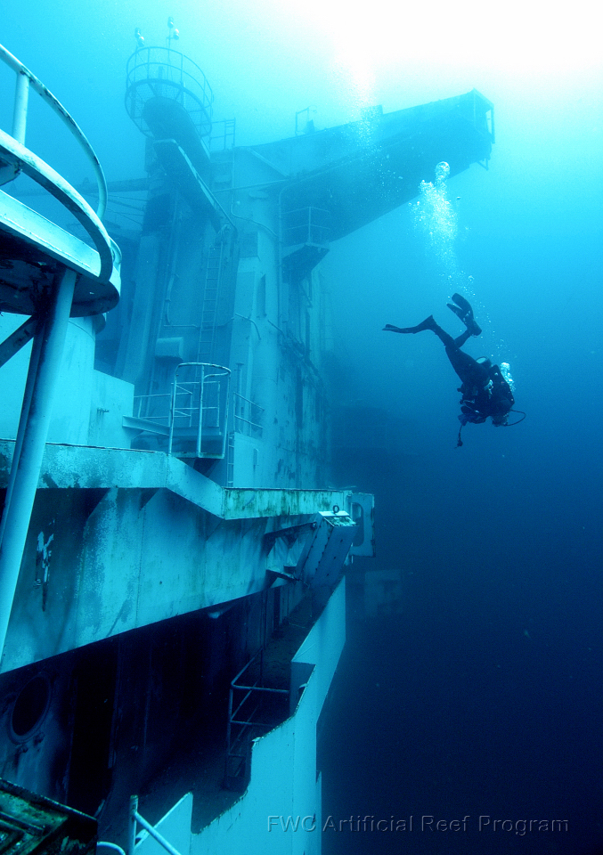
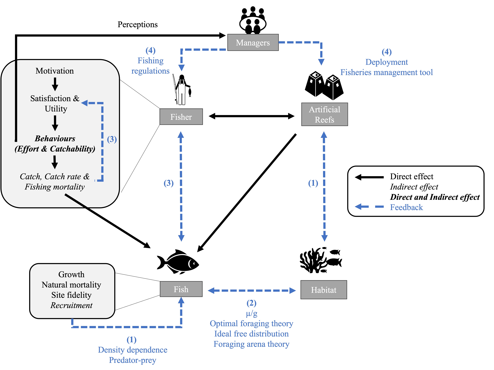
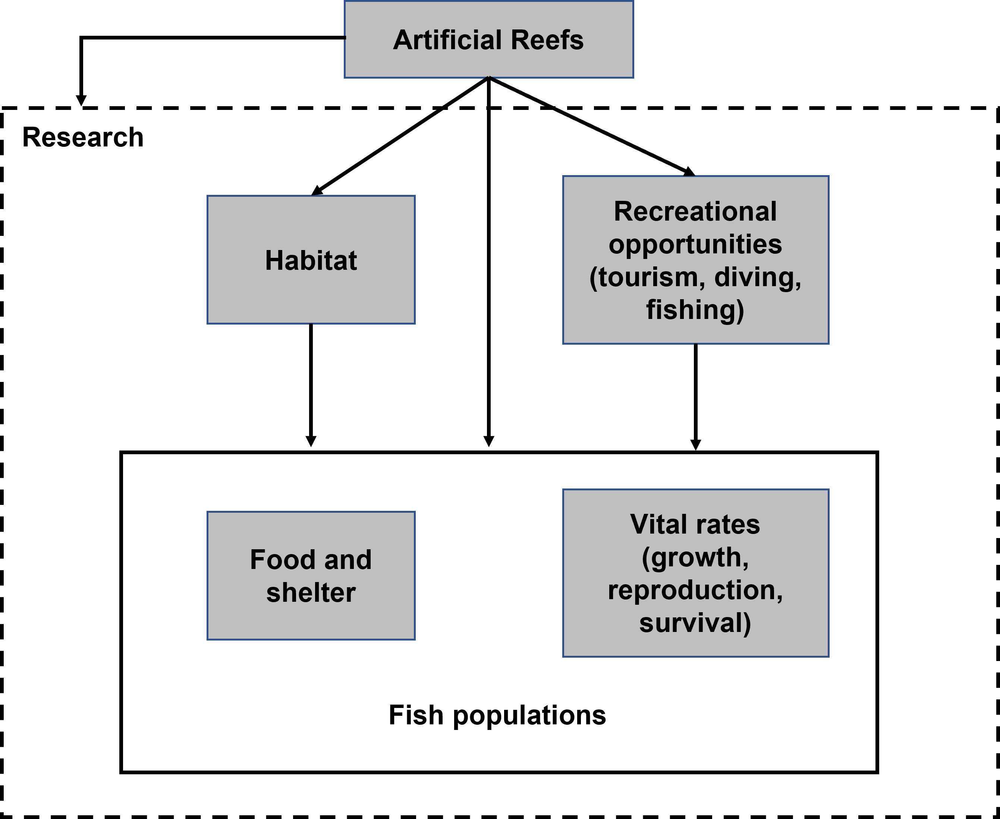
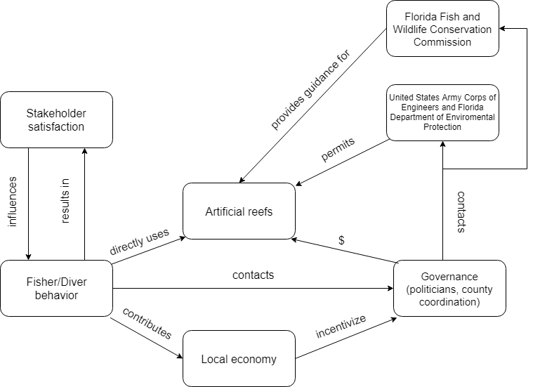
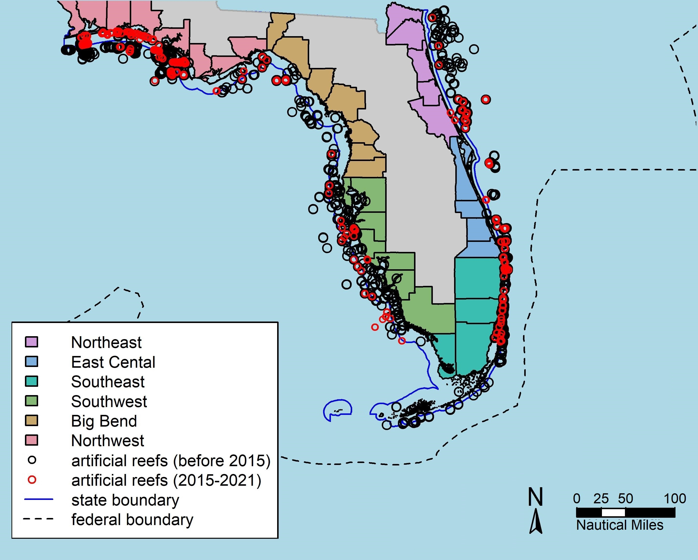
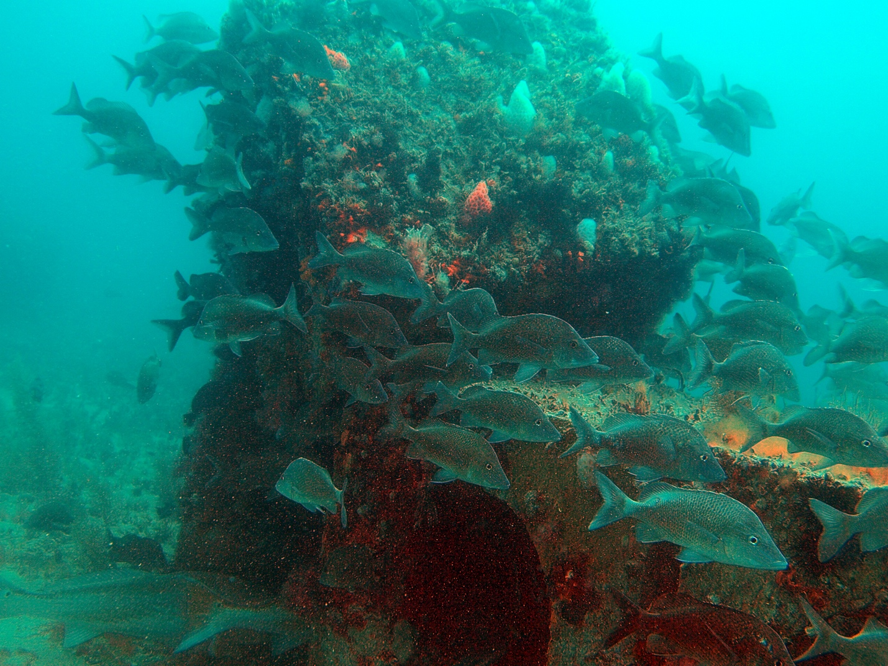

Artificial reefs in socio-ecological fisheries systems
One component of my dissertation was to evaluate the effects and feedbacks of artificial reefs in socio-ecological fisheries systems. This led to the creation of multiple written works as listed below, including a publication and several extension documents.
Global synthesis of effects and feedbacks from artificial reefs on socioecological systems in recreational fisheries
Authors: Lisa Chong (UF), Zachary Siders (UF), Kai Lorenzen (UF), Robert Ahrens (PIFSC), Edward Camp (UF).

Substantial work has been done to understand the ecology of artificial reefs and an increasing number of studies have examined the socioeconomic aspects, however their effects on the overall socioecological system are not well understood. Artificial reefs are known to affect fish, fishers, surrounding habitat, and management; however, this has not been examined holistically as their feedbacks are difficult to intuit. Given the natural of widespread introduction of made-made structures to the seascape, it is likely that artificial reefs have local and systems-level effects on fisheries. This should be examined in the socioecological systems context as the ecological and socioeconomic impacts of artificial reefs do not exist in isolation.
We conducted a literature review to catalogue effects and feedbacks of artificial reefs on social-ecological fisheries systems and recreational fisheries. We extracted information from both artificial reef and recreational fisheries research. This synthesis reveals that artificial reefs across the world may result in a net negative effect on fisheries as socioeconomic benefits outweigh the biological benefits and productivity. There may be unintended consequences if biological benefits from habitat-to-fish and fish-to-fish feedbacks are outweighed by population losses due to greater socioeconomic benefits from fish-to-fisher feedbacks. Taken in concert with their semi-permanent nature and apparent popularity with stakeholders, a view emerges of artificial reefs possibly functioning as a “social-ecological trap”. We also highlighted important effects of artificial reefs on fisheries and linkages that need to be accounted for when considering their deployment.

University of Florida Extension Documents
EDIS is the Electronic Data Information Source of UF/IFAS Extension, a collection of information on topics. These are developed in support of Extension program area goals and objectives and published by UF/IFAS academic departments.
Artificial reefs in Florida 101
Authors: Lisa Chong (Fisheries and Aquatic Sciences), Angela Collins (Florida SeaGrant), Holly Abeels (Florida SeaGrant), Anna Braswell (Fisheries and Aquatic Sciences), Ana Zangroniz (Florida SeaGrant), Andrew Ropicki (Food and Resource Economics Department), Scott Jackson (Florida SeaGrant), and Edward Camp (Fisheries and Aquatic Sciences)
This four-part series provides an overview of Florida’s artificial reefs for decision-makers, such as local government officials, management agency personnel, artificial reef manufacturers, and extension agents. The publications describe, summarize, and explain scientific information about artifical reefs and break up the topics for easy reading and comprehension.

Part 1 describes why artifical reefs are built in Florida. It serves as a primer for the rest of the series.
Part 2 explains how artificial reefs affect fish ecology. This describes how artificial reefs affect ecological processes and how those changes may translate into species population-level effects.
Part 3 conveys how artificial reefs affect end-users, which an emphasis on fishers and recreational divers. Artificial reefs can affect behavior by fishers and divers, which include choosing where, how much, and which species to target when fishing.
Part 4 describes how the overall fishery system (fish, fishers, and divers) are affected by artificial reefs. It builds off information from the previous publications and goes into the trade-offs and benefits of artificial reefs.
Overview and updates of artificial reefs in Florida
Artificial Reefs and People: how we create them and how they affect us: This is an overview of how people are involved with artificial reefs. Artificial reefs affect users, local economies, government, state scientists, and managers.

An update on Florida’s artificial reefs: recent deployments and trends: This reviews artificial reef deployments from 2015-2021 by region.

An update on Florida’s artificial reefs: recent research and what it means for Florida: This summarizes peer reviewed publications on key topics in artificial reefs literature, including marine ecology, fisher behavior, design, and monitoring.
